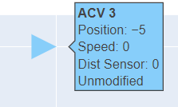

Abstract
We present our Multi-Armed Bandit EvaLuator (MABEL) that evaluates several Multi-Armed Bandit (MAB) models for real-world efficacy. This is the first known tool of its kind that can evaluate several MAB models, evaluating their ability to deal with corrupt and missing values. We also present a robust evaluation of several Multi-Armed Bandit (MAB) and Contextual Multi-Armed Bandit (MAB) models.
The MABEL tool uses a real-world scenario of autonomous connected vehicles (ACVs). These ACVs rely on sensors and inter-vehicle communication to operate safely and effectively as a fleet. This interconnectedness exposes the ACV system to cyber attacks in which an attacker injecting or manipulating sensor readings for even one vehicle could disrupt the entire ACV system. One approach to filtering out compromised sensor reading is with the use of MAB and CMAB machine learning models to assign penalties from a Gaussian distribution to the ACVs for crashes which often result from trusting data outliers. We researched algorithms that could be applicable and began with Epsilon-greedy, Linear Thompson Sampling, and LinUCB (Upper Confidence Bound). To fairly compare the models while handling the different input requirement, we created the ACV robust simulation MABEL using a MAPE-K adaptation control loop to run 100s of trials. We present our findings applying various MAB/CMAB models to MABEL to serve as a benchmark determining which model would be best suited for sensor outlier identification. The MAB/CMAB algorithm implementations and MABEL will both be presented as well as the findings from the evaluation itself.
The findings suggest that while not all MAB algorithms are suited to address the scenario we presented, some models such as LinUCB demonstrate notable success in filtering out compromised sensor readings in ACV systems.
Download
MABEL is open source and can be access at MABEL Github.
Setup
-
Clone
git clone https://github.com/iCMAB/iCMAB-SimulationTool.git
-
Run
python3 src/ACVSimulation.py
- The MABEL interface will guide you in the section of an MAB or CMAB model and results will display in the terminal.
Output
When running MABEL, output will be broken up into four discrete sections:
1. Model Selection
The MABEL interface will prompt you to select from a list of MAB models to test.
2. Starting Information
Once a model is selected, some starting information will be provided:
- MAB model: the MAB model that was selected.
- ACV count: the number of ACVs that are in the simulation.
- Ideal distance: the distance which the ACVs will try to maintain between each other.
- Total iterations: the number of iterations the simulation will run for.
- Iterations being modified: the iterations where distance sensor readings will be manipulated. Displays the iterations which the modification will occur, the ACV which will be modified, and the multiplier that will be applied to the distance sensor value
3. Simulation
The simulation is initially visualized as a table showing the distance, speed, location values of each ACV in the system. Note that the lead ACV does not have a distance value as there are no ACVs ahead of it.
The color coding of the table is as follows:
-
Yellow:
The ACV's distance sensor has been manipulated. A short description of this is also displayed to the right of the table. -
Red:
A crash has occurred between two ACVs. A short description of this is displayed to the right of the table as well. -
Green:
The MAB model has determined that the reading is faulty and the ACV has decided to ignore the sensor reading. The actual, unmodified distance reading is given in its place.
4. Metrics
Various metrics are shown at the conclusion of the simulation.
The table describes the penalty and regret incurred by each ACV, compared with what the baseline of these values would be (no sensor reading filtering applied). Below the table is the total number of crashes, average penalty and total regret for all ACVs, along with their baseline values, and percentage improvement in penalty and regret compared to the baseline.
Some notes about penalty and regret:
- Penalty: penalty (P) = variation (V) from desired ^2 -> P = V^2. This is essentially the distance from the desired distance squared. When vehicles collide, a very large penalty of 1000 is applied to the ACV so long as there was a choice it could've made that would've prevented the crash
- Regret: regret is calculated by subtracting the baseline penalty from the actual penalty. Essentially, it is the difference between the achieved utlity and what it would've been without any bad sensor filtering applied.
5. Visualization
After displaying metrics, MABEL will ask if you'd like to run the visualization.
This is a graphical visualization of the ACVs at each iteration made using Plotly Dash. Opting in will start the Flask server that runs the visualization, and a new tab will open in Google Chrome. The visualization runs on port 8050 (http://127.0.0.1:8050/), so if you have another application running on that port, you will need to close it before running the visualization.
Each ACV's position is represented as a triangle, and the vehicles move left to right. ACVs are staggered vertically for visual clarity - disregard vertical spacing and imagine that each ACV is in a single-file horizontal line.
Here is an outline of the controls available:
- Slider: A draggable handle to modify which iteration in the simulation is displayed.
- Play/Pause: Plays or pauses the simulation, running through each iteration sequentially one by one.
- Arrows: Moves the current iteration forward/backward by one.
- Skip to Next Modificaiton: Skips to the next iteration in which an ACV's sensor is being modified.
The color coding of ACVs is similar to how it is in the table layout. It goes as follows:
-
Blue Fill:
The ACV is behaving normally. No sensor manipulation present. -
Yellow Fill:
The ACV's distance sensor has been manipulated. Hover over the ACV marker to view more info. -
Red Outline:
A crash has occurred between two ACVs. The graph will display which two ACVs were involved in the crash. -
Green Fill:
The MAB model has determined that the reading is faulty and the ACV has decided to ignore the sensor reading. Hover over the ACV marker to view more info.
Hovering over any ACV marker displays a tooltip showing more information about that vehicle, including its position, speed, distance reading, and whether its sensor was manipulated or not.
Using this visualization tool, you can get a clear picture of how the ACVs are behaving at any given point in the simulation.
The Team
| Kaiy Muhammad | Alex Hetrick |
|---|---|
|
Fourth Year Computer Science student on co-op in
robotics R&D. Interested in Autonomous Systems. |
Second Year Software Engineering student. Interested in the practical application of software products. Personal Website |
| Varsha Venkatesh | Dr. Daniel Krutz |
|
Director of the
AWARE LAB
and assistant professor. Interested in Self Adaptive Systems, Strategic Reasoning and Computing Education. |